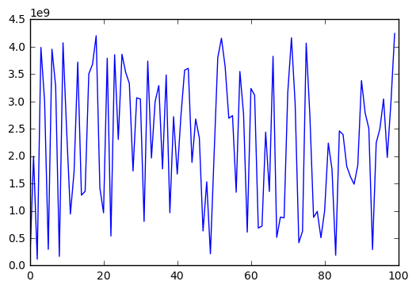

Języki skryptowe - Python¶
Wykład 7¶
- Bilioteka standardowa
- os
- sys
- time / datetime
- random
- Liczby pseudolosowe
Moduł os¶
- przenośne używanie funkcjonalności zależnych od systemu operacyjnego
- operacje na plikach (o tym za tydzień)
- operacje na ścieżkach
- uruchamianie poleceń systemowych
- zarządzanie zmiennymi środowiskowymi
- ...
System operacyjny¶
import os # POSIX = Portable Operating System Interface for Unix os.name # posix, nt, ce, java
'posix'
if os.name == "posix": # jeśli unix cmd = "ls" # użyj ls elif os.name == "nt": # jeśli windows cmd = "dir" # użyj dir print(cmd)
ls
Katalog roboczy¶
current_path = os.getcwd() # pwd print("Katalog roboczy:", current_path) new_path = "/home/goran" os.chdir(new_path) # zmień katalog roboczy print("Nowy katalog roboczy:", os.getcwd()) os.chdir(current_path) # wracamy
Katalog roboczy: /doc/insync/scratch/zajęcia/2016/języki skryptowe - python/js-python Nowy katalog roboczy: /home/goran
Zawartość katalogu¶
os.listdir("/usr/") # lista plików i katalogów
['src', 'local', 'bin', 'include', 'sbin', 'lib', 'games', 'share', 'locale']
os.listdir() # lista plików i katalogów w pwd
['my_script.py', 'usos.py', '.ipynb_checkpoints', 'js-python_w05.html', 'js-python_w01.html', 'js-python_l02.md', 'test.2016_11_11_175921.log', 'js-python_w04.ipynb', 'js-python_w06.html', 'README.md', 'js-python_w03.html', 'test.2016_11_11_175922.log', 'js-python_l00.md', 'iloczyn.py', 'js-python_w04.html', 'temp.py', 'js-python_w03.ipynb', 'js-python_l01.pdf', 'js-python_w05.ipynb', 'print_args.py', 'src', 'js-python_l01.md', 'middle2.py', 'js-python_w01.ipynb', 'listy_zadan', '__pycache__', 'dodaj_studentow.py', 'js-python_w07.ipynb', 'test.2016_11_11_175942.log', 'js-python_w02.ipynb', 'js-python_w02.html', 'temp', 'my_module.py', 'js-python_w06.ipynb', 'private.py']
Tworzenie / usuwanie katalogów¶
def check(ls, folder): """Sprawdza czy folder znajduje się na liście.""" if folder in ls: print("{} is found.".format(folder)) else: print("{} not found.".format(folder)) my_folder = "test" check(os.listdir(), my_folder) os.mkdir(my_folder) # stwórz katalog test check(os.listdir(), my_folder) os.rmdir(my_folder) # usuń katalog test check(os.listdir(), my_folder)
test not found. test is found. test not found.
Tworzenie / usuwanie plików¶
os.mkdir("my_dir") # stwórz katalog "my_dir" # otwórz plik w trybie zapisu (więcej za tydzień) file = open("my_dir/my_file", 'w') file.close() os.listdir("my_dir")
['my_file']
# nie można usunąć niepustego katalogu os.rmdir("my_dir") # OSError: [Errno 39] Directory not empty: 'my_dir'
---------------------------------------------------------------------------
OSError Traceback (most recent call last)
<ipython-input-8-35adb4ad65f2> in <module>()
1 # nie można usunąć niepustego katalogu
----> 2 os.rmdir("my_dir") # OSError: [Errno 39] Directory not empty: 'my_dir'
OSError: [Errno 39] Directory not empty: 'my_dir'
os.remove("my_dir/my_file") # usuń plik os.rmdir("my_dir") # usuń katalog
Drzewo katalogów¶
# os.makedirs(..., exist_ok=True) -> działa jak mkdir -p os.makedirs("level0/level1/level2") # utwórz "ciąg" katalogów os.listdir("level0")
['level1']
os.listdir("level0/level1")
['level2']
# os.rmdir("level0/level1/level2") # usunie tylko level2 os.removedirs("level0/level1/level2") # usunie wszystko
Moduł os.path¶
import os path = "/my/path" # katalog file = "file.py" # plik os.path.join(path, file) # tworzy pełną ścieżkę do pliku
'/my/path/file.py'
os.path.split("/my/path/file.py") # zwraca (head, tail)
('/my/path', 'file.py')
os.path.dirname("/my/path/file.py") # zwraca split()[0]
'/my/path'
os.path.basename("/my/path/file.py") # zwraca split()[1]
'file.py'
Więcej o os.path¶
import os.path as path path.splitext("/my/path/file.py") # wydziela rozszerzenie pliku
('/my/path/file', '.py')
my_path, my_file = path.split("/my/path/file.py") my_base, my_extn = path.splitext(my_file) print("my_path =", my_path) print("my_file =", my_file) print("my_base =", my_base) print("my_extn =", my_extn)
my_path = /my/path my_file = file.py my_base = file my_extn = .py
Zmienne środowiskowe¶
os.getenv("HOME") # pobierz wartość zmiennej środowiskowej
'/home/goran'
os.environ["HOME"] # environ -> słownik zś
'/home/goran'
os.environ["MOJA_ZMIENNA"] = "To musi być string"
%%bash # wywołanie komendy basha z poziomu jupytera echo $MOJA_ZMIENNA
To musi być string
USOS¶
%%writefile usos.py """Uniwersytecki System Obsługi Studiów Dane przechowywane w postaci: kierunek/rok/imie.nazwisko a w pliku zapisany jest numer indeksu """ import os # top-level katalog na podstawie zmiennej środowiskowej $USOS # jeśli nie jest zdefiniowana -> bieżący katalog _BASE_PATH = os.getenv("USOS") or os.getcwd()
Overwriting usos.py
Zmienna środowiskowa USOS¶
%%bash echo $USOS python -c "import usos; print(usos._BASE_PATH)"
/doc/insync/scratch/zajęcia/2016/języki skryptowe - python/js-python
%%bash export USOS="/moja/sciezka/do/bazy/danych" python -c "import usos; print(usos._BASE_PATH)"
/moja/sciezka/do/bazy/danych
USOS - dodawanie studenta¶
%%writefile -a usos.py def add_student(imie, nazwisko, indeks, kierunek, rok): """Dodaje studenta. Tworzy plik imie.nazwisko w katalogu kierunek/rok/ i umieszcza w nim numer indeksu """ # pełna ścieżka do katalogu danego kierunku/rocznika path = os.path.join(_BASE_PATH, kierunek, str(rok)) # imie.nazwisko file = ".".join([imie, nazwisko]) # stwórz kierunek lub pomiń jeśli istnieje os.makedirs(path, exist_ok=True) # o plikach więcej za tydzień with open(os.path.join(path, file), 'w') as f: f.write(str(indeks))
Appending to usos.py
USOS - przykład¶
%%writefile dodaj_studentow.py import usos import random imiona = ["Kasia", "Basia", "Marek", "Darek"] nazwiska = ["Nowak", "Marian", "Python"] kierunki = ["ISSP", "Fizyka Komputerowa"] for i in range(10): imie = random.choice(imiona) # losowe imie nazwisko = random.choice(nazwiska) # losowe nazwisko indeks = random.randint(1000, 9999) # losowy indeks rocznik = random.randint(2015, 2017) # losowy rocznik kierunek = random.choice(kierunki) # losowy kierunek usos.add_student(imie, nazwisko, indeks, kierunek, rocznik)
Overwriting dodaj_studentow.py
USOS - wynik¶
%%bash export USOS=/home/goran/usos python dodaj_studentow.py tree $USOS
/home/goran/usos
├── Fizyka Komputerowa
│ ├── 2015
│ │ └── Marek.Python
│ ├── 2016
│ │ ├── Basia.Marian
│ │ ├── Kasia.Nowak
│ │ └── Marek.Python
│ └── 2017
│ └── Basia.Marian
└── ISSP
├── 2015
│ └── Marek.Marian
├── 2016
│ ├── Basia.Marian
│ ├── Kasia.Nowak
│ └── Kasia.Python
└── 2017
└── Basia.Nowak
8 directories, 10 files
os.walk¶
# os.walk "podróżuje po drzewie katalogów" # na każdym kroku zwracając krotkę # (obecny katalog, lista podkatalogów, lista plików) for root, dirs, files in os.walk("/home/goran/usos"): print(root, dirs, files, sep="\n", end="\n\n")
/home/goran/usos ['Fizyka Komputerowa', 'ISSP'] [] /home/goran/usos/Fizyka Komputerowa ['2016', '2015', '2017'] [] /home/goran/usos/Fizyka Komputerowa/2016 [] ['Kasia.Nowak', 'Basia.Marian', 'Marek.Python'] /home/goran/usos/Fizyka Komputerowa/2015 [] ['Marek.Python'] /home/goran/usos/Fizyka Komputerowa/2017 [] ['Basia.Marian'] /home/goran/usos/ISSP ['2016', '2015', '2017'] [] /home/goran/usos/ISSP/2016 [] ['Kasia.Python', 'Kasia.Nowak', 'Basia.Marian'] /home/goran/usos/ISSP/2015 [] ['Marek.Marian'] /home/goran/usos/ISSP/2017 [] ['Basia.Nowak']
os.walk¶
for root, dirs, files in os.walk("/home/goran/usos"): for file in files: # pętla po plikach w danym katalogu root print(os.path.join(root, file))
/home/goran/usos/Fizyka Komputerowa/2016/Kasia.Nowak /home/goran/usos/Fizyka Komputerowa/2016/Basia.Marian /home/goran/usos/Fizyka Komputerowa/2016/Marek.Python /home/goran/usos/Fizyka Komputerowa/2015/Marek.Python /home/goran/usos/Fizyka Komputerowa/2017/Basia.Marian /home/goran/usos/ISSP/2016/Kasia.Python /home/goran/usos/ISSP/2016/Kasia.Nowak /home/goran/usos/ISSP/2016/Basia.Marian /home/goran/usos/ISSP/2015/Marek.Marian /home/goran/usos/ISSP/2017/Basia.Nowak
Moduł glob¶
- umożliwia wykorzystanie uniksowych dzikich kart:
?,*,[]
import glob glob.glob("*.ipynb") # lista plików z rozszerzeniem ipynb
['js-python_w04.ipynb', 'js-python_w03.ipynb', 'js-python_w05.ipynb', 'js-python_w01.ipynb', 'js-python_w07.ipynb', 'js-python_w02.ipynb', 'js-python_w06.ipynb']
Więcej o glob¶
# pliki z roszerzeniem html oraz # pasujące do wzorca (coś)(cyfra od 0 do 3) glob.glob("*[0-3].html")
['js-python_w01.html', 'js-python_w03.html', 'js-python_w02.html']
glob.glob("js-python_?02.*") # js-python_[znak]02.[cokolwiek]
['js-python_l02.md', 'js-python_w02.ipynb', 'js-python_w02.html']
glob.glob("js-python_?02.[mi]*") # js-python_[znak]02.[m lub i]cokolwiek
['js-python_l02.md', 'js-python_w02.ipynb']
Moduł sys¶
- funkcje i parametry specyficzne dla systemu operacyjnego
- ostatnio: ścieżka dostępu do modułów sys.path
- referencje do obiektów
- argumenty wywołania skryptu
Referencje do obiektu¶
%reset
Once deleted, variables cannot be recovered. Proceed (y/[n])? y
import sys x = 1234 y = 1234 z = "Mój tekst" sys.getrefcount(x) # x, y i ?
3
sys.getrefcount(z) # getrefcount pracuje na kopii z
2
Referencje do obiektów mutowalnych¶
x = [1, 2, 3] y = x z = x.copy() sys.getrefcount(x) # x, y i getrefcount
3
x is y # x i y wskazują to samo
True
x is z # x i z wskazują na inne listy
False
Argumenty¶
%%writefile print_args.py """Drukuje argumenty podane w linii komend.""" import sys # sys.argv - lista argumentó linii komend for i, arg in enumerate(sys.argv): print("{}. {}".format(i, arg))
Overwriting print_args.py
!python print_args.py arg1 arg2 33 "hello world"
0. print_args.py 1. arg1 2. arg2 3. 33 4. hello world
Przykład¶
%%writefile iloczyn.py """Liczy iloczyn podanych argumentów.""" import sys if len(sys.argv) < 2: # sys.argv[0] = iloczyn.py print("Musisz podać co najmniej jedną liczbę .") else: wyrazenie = "*".join(sys.argv[1:]) print(wyrazenie, "=", eval(wyrazenie))
Overwriting iloczyn.py
!python iloczyn.py
Musisz podać co najmniej jedną liczbę .
!python iloczyn.py 1 2 5 4 10 0.5
1*2*5*4*10*0.5 = 200.0
Moduł time¶
- operacje na czasie
- nie wszystkie funkcjonalności są dostępne na wszystkich platformach
- najczęściej wywoływane są funkcje biblioteki C o tej samej nazwie
Czas uniksowy¶
import time time.gmtime() # Greenwhich Mean Time / czas uniwersalny
time.struct_time(tm_year=2016, tm_mon=11, tm_mday=14, tm_hour=17, tm_min=43, tm_sec=9, tm_wday=0, tm_yday=319, tm_isdst=0)
time.time() # ile minęło sekund od
1479145391.2862186
time.gmtime(0) # eoki Uniksa
time.struct_time(tm_year=1970, tm_mon=1, tm_mday=1, tm_hour=0, tm_min=0, tm_sec=0, tm_wday=3, tm_yday=1, tm_isdst=0)
Przybliżony test¶
time.time() / 60 / 60 / 24 / 365 # lat
46.90339274137039
time.gmtime()[0] - time.gmtime(0)[0] # rok teraz - rok epoki linuksa
46
Uniksowe chwile godne uwagi¶
time.gmtime(1000000000)[:6] # Unix billenium
(2001, 9, 9, 1, 46, 40)
time.gmtime(1234567890)[:6] # piątek 13-tego
(2009, 2, 13, 23, 31, 30)
time.gmtime(0xFFFFFFFF)[:6] # max bez znaku (32-bit)
(2106, 2, 7, 6, 28, 15)
time.gmtime(0x7FFFFFFF)[:6] # max ze znakiem (32-bit)
(2038, 1, 19, 3, 14, 7)
Czas lokalny¶
time.localtime() # czas lokalny
time.struct_time(tm_year=2016, tm_mon=11, tm_mday=14, tm_hour=18, tm_min=43, tm_sec=19, tm_wday=0, tm_yday=319, tm_isdst=0)
time.localtime()[3] - time.gmtime()[3] # różnica Polska - GMT
1
Czas w formie czytelnej¶
teraz = time.localtime() time.strftime("%c", teraz) # lub time.asctime(teraz)
'Mon Nov 14 18:43:22 2016'
dzien_tygodnia = time.strftime("%A", teraz) # %a - skrót print("Dzisiaj jest", dzien_tygodnia)
Dzisiaj jest Monday
time.strftime("%Y-%m-%d %H:%M", teraz) # ROK-MIESIĄC-DZIEŃ GODZINA:MINUTA
'2016-11-14 18:43'
- pełna lista dyrektyw tutaj
Pomiar czasu (wall time)¶
import time def poczekalnia(n): """Czeka n sekund.""" time.sleep(n) przed = time.time() # czas przed wywołaniem funkcji poczekalnia(2) po = time.time() # czas po wywołaniu funkcji print("Czekałem {} sekund.".format(po - przed))
Czekałem 2.002260446548462 sekund.
Pomiar czasu procesora (process time)¶
import time def poczekalnia(n): """Czeka n sekund.""" time.sleep(n) przed = time.clock() # czas przed wywołaniem funkcji poczekalnia(2) po = time.clock() # czas po wywołaniu funkcji print("Czekałem {} sekund.".format(po - przed))
Czekałem 0.0015890000000000626 sekund.
Moduł datetime¶
- wygodniejszy w użyciu do zarządzania czasem i datą
- arytmetyka czasu i daty, np.
import datetime t0 = datetime.datetime.now() t1 = datetime.datetime(2017, 2, 4) # początek sesji print(t1 - t0)
81 days, 5:16:24.258938
Przykład¶
teraz = datetime.datetime.now() uniks_end = datetime.datetime(2038, 1, 19, 3, 14, 7) print("teraz =", teraz) print("rok =", teraz.year) print("miesiąc =", teraz.month) print("dzień =", teraz.day) print("Do końca uniksa zostało", uniks_end - teraz)
teraz = 2016-11-14 18:43:37.185897 rok = 2016 miesiąc = 11 dzień = 14 Do końca uniksa zostało 7735 days, 8:30:29.814103
Przykład - logi¶
import os from datetime import datetime def create_log(log_path, process): """Tworzy unikatowy log.""" timestamp = datetime.now().strftime('%Y_%m_%d_%H%M%S') filename = ".".join([process, timestamp, "log"]) with open(os.path.join(log_path, filename), 'w+') as f: f.write("Uruchomiono proces.") create_log(os.getcwd(), "test")
%%bash ls -l *.log
-rw-rw-r-- 1 goran goran 19 lis 11 17:59 test.2016_11_11_175921.log -rw-rw-r-- 1 goran goran 19 lis 11 17:59 test.2016_11_11_175922.log -rw-rw-r-- 1 goran goran 19 lis 11 17:59 test.2016_11_11_175942.log -rw-rw-r-- 1 goran goran 19 lis 14 18:43 test.2016_11_14_184342.log
Generatory liczb pseudolosowych¶
- nie jest możliwe wygenerowanie liczby prawdziwie losowej
- możliwe jest wygenerowanie (na bazie liczby wejściowej, seed) ciągu liczb pseudolosowych
- ten sam seed = ten sam ciąg
- maksymalna ilość ciągów = możliwe seedy
- okresowość
Middle square method¶

- stworzony przez Johna von Neumanna
- Wykorzystany w
- ENIAC (jeden z pierwszych komputerów na świecie)
- Projekt Manhattan
Middle square method - algorytm¶
- weź liczbę 4-cyfrową jako seed (w ogólności można wziać n-cyfrową liczbę)
- podnieś do kwadratu, aby otrzymać liczbę 8-cyfrową (dodaj zera, jeśli trzeba)
- 4 środkowe cyfry są wynikiem i seedem dla następnej liczby
Middle square method - implementacja¶
%%writefile middle2.py """PRNG using middle-square method.""" def _middle2(n): """Return next random number.""" return int(str(n*n).zfill(8)[2:6]) def generate(n, seed=1111): """Generate n numbers starting with seed.""" numbers = [] for _ in range(n): numbers.append(seed) seed = _middle2(seed) return numbers
Overwriting middle2.py
Middle square method - wyniki¶
%matplotlib inline import matplotlib.pyplot as plt import middle2 size, seed = 100, 1234 x, y = range(size), middle2.generate(size, seed) plt.plot(x, y)
[<matplotlib.lines.Line2D at 0x7f31658c5240>]

Algorytm LCG¶
- LCG = linear congruential generator
- zaimplementowany w wielu językach
- prosty i szybki
- silne korelacje - nie nadaje się do symulacji Monte Carlo (i tym bardziej kryptografii)
Algorytm LCG - implementacja¶
def lcg(seed, m, a, c): """Return next random number using LCG.""" return (seed * a + c) % m size, seed = 100, 1234 a, c, m = 48271, 0, 2**32 - 1 # C++11 minst_rand random_numbers = [] for _ in range(size): seed = lcg(seed, m, a, c) random_numbers.append(seed)
Algorytm LCG - wyniki¶
import matplotlib.pyplot as plt x = range(size) plt.plot(x, random_numbers)
[<matplotlib.lines.Line2D at 0x7f316581b5f8>]

Algorytm LCG - korelacje¶
# Mathematics and Computers in Simulations 46 (1998) 485-505 seed = 1 a = 65539 c = 0 m = 2**31 punkty = [] # losowe punkty for _ in range(9600): seed = lcg(seed, m, a, c) punkty.append(seed) x = punkty[::3] # współrzędne x y = punkty[1::3] # współrzędne y z = punkty[2::3] # współrzędne z
Algorytm LCG - punkty 3D¶
import matplotlib.pyplot as plt from mpl_toolkits.mplot3d import Axes3D from time import sleep fig = plt.figure() ax = fig.add_subplot(111, projection='3d') ax.scatter(x, y, z, marker='.')
<mpl_toolkits.mplot3d.art3d.Path3DCollection at 0x7f3164d78e10>

Algorytm LCG - punkty 3D¶
import matplotlib.pyplot as plt from mpl_toolkits.mplot3d import Axes3D fig = plt.figure() ax = fig.add_subplot(111, projection='3d') ax.view_init(30, 60) ax.scatter(x,y,z, marker='.')
<mpl_toolkits.mplot3d.art3d.Path3DCollection at 0x7f3164cbeeb8>

Moduł random¶
- generator Mersenne Twister
- zaniedbywalna korelacja między kolejnymi liczbami (dobry do symulacji Monte Carlo)
- przewidywalność (nie nadaje się do kryptografii)
- szybki, ale "nieelegancki"
Losowe liczby zmiennoprzecinkowe¶
import random # random.random() -> losowa liczba z [0, 1) losowe = [random.random() for _ in range(10)] print(losowe)
[0.2698846730753022, 0.39646893011652196, 0.3569316622351202, 0.7422356288778353, 0.9872672338526717, 0.8037923911064603, 0.8702317548225692, 0.4956627050929412, 0.3254081126694237, 0.3929978024317329]
# random.uniform(a, b) -> losowa z przedziału [a, b] losowe = [random.uniform(99, 100) for _ in range(10)] print(losowe)
[99.99533728109901, 99.59952026049403, 99.42567811786209, 99.78233290994207, 99.84681728147966, 99.53305937003043, 99.47972787766165, 99.94064273021912, 99.8788743089142, 99.76186755697995]
Losowe liczby całkowite¶
import random # random.randint(a, b) - losowa całkowita z [a, b] losowe = [random.randint(1, 10) for _ in range(10)] print(losowe)
[4, 3, 7, 2, 5, 3, 6, 6, 5, 1]
# random.randrange(stop) -> losowa < stop # random.randrange(start, stop[, step]) losowe = [random.randrange(10) for _ in range(10)] print(losowe)
[7, 5, 0, 2, 4, 5, 1, 1, 1, 4]
Losowe z sekwencji¶
import random x = "Python" y = ['a', 'b', 'c', 1, 2, 3]
random.choice(x) # losowa litera z str
'o'
random.choice(y) # losowy element listy
2
random.sample(y, 3) # losowy podzbiór
[1, 3, 'b']
Seed¶
import random for _ in range(5): print(random.random())
0.5943111012611626 0.7799061974116444 0.9688698425524694 0.09623949574155088 0.7030765207216848
for _ in range(5): random.seed(1234) # stały seed -> stała wartość print(random.random())
0.9664535356921388 0.9664535356921388 0.9664535356921388 0.9664535356921388 0.9664535356921388
Totolotek¶
from random import randint def losowanie(): """Losuje 6 liczb od 1 do 49.""" return sorted([randint(1, 49) for _ in range(6)]) def check(a, b): """Sprawdza ilość takich samych elementów.""" return len([n for n in a if n in b]) def play(): """Gra w lotka.""" lotto = losowanie() # losowanie lotto kupon = losowanie() # kupon chybił-trafił return check(kupon, lotto)
Totolotek - symulacja¶
%matplotlib inline import matplotlib.pyplot as plt n = 10000 # ilość gier wyniki = [play() for _ in range(n)] plt.hist(wyniki, 6)
(array([ 4.80300000e+03, 3.70800000e+03, 1.26200000e+03,
1.96000000e+02, 2.90000000e+01, 2.00000000e+00]),
array([ 0. , 0.83333333, 1.66666667, 2.5 , 3.33333333,
4.16666667, 5. ]),
<a list of 6 Patch objects>)